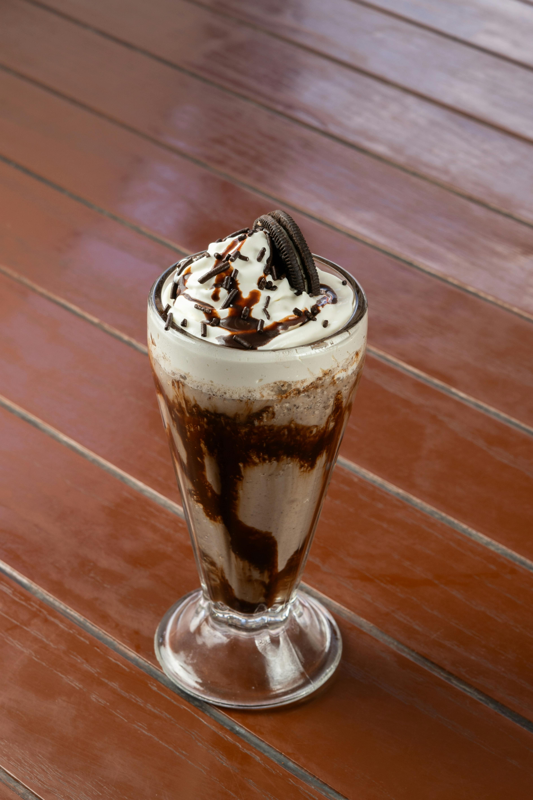

Milkshake (any flavor)

Description
Pretty simple and straight-forward recipe with a lot of leeway in what you can throw in. You only really need like three things, and a blender, to make a simple milkshake.
Ingredients
- Milk, any kind is fine but the default for me would be whole milk
- Ice-cream, any kind but some all-time picks would be vanilla, strawberry or chocolate
- A blender
Steps
- Add around 5 scoops of your preferred ice-cream into your blender.
- Add a small splash of milk.
- Blend the ingredients until it becomes a sort of firm liquid, not too watery. If it's still too hard like ice-cream, you can add a bit of milk. If it's too watery, add more ice-cream. Blend it again until you get the texture you want.
- For best effect, pour the milkshake into a cooled glass and serve with a straw.
Home